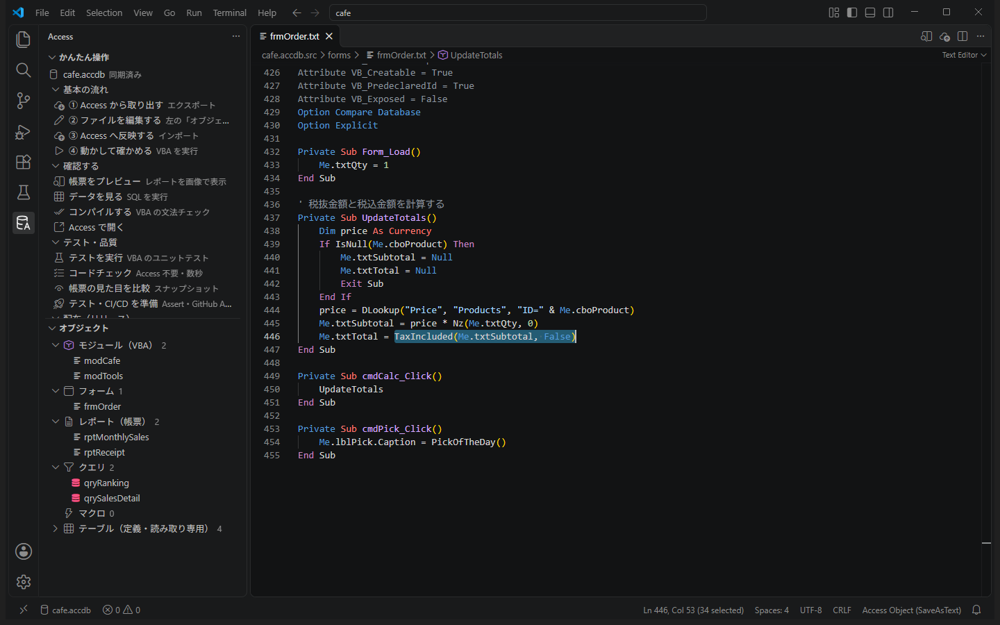
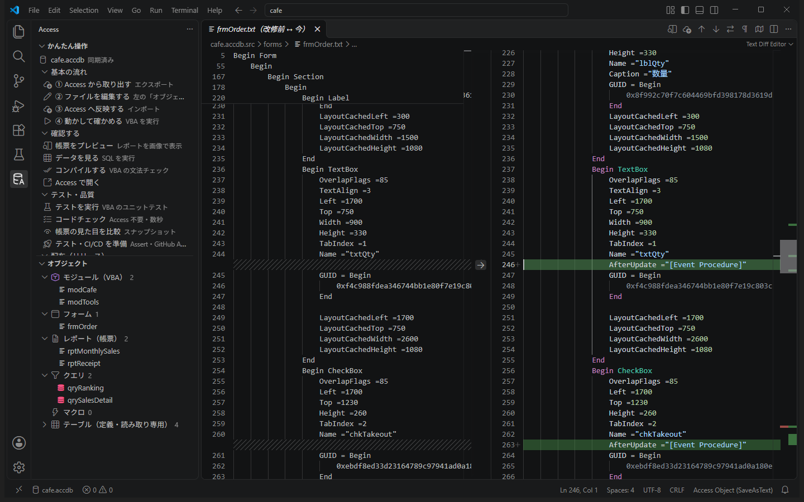
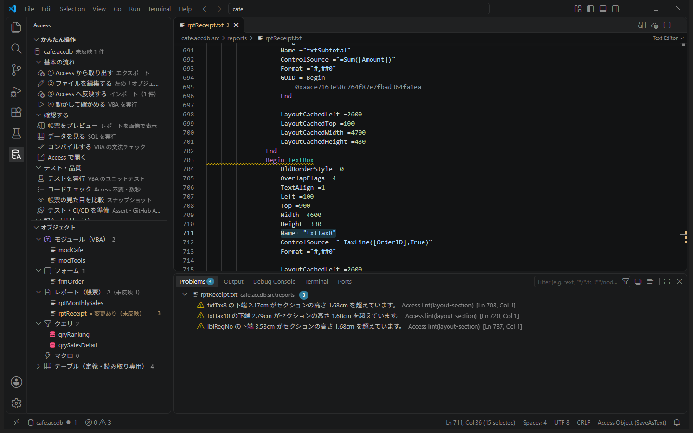
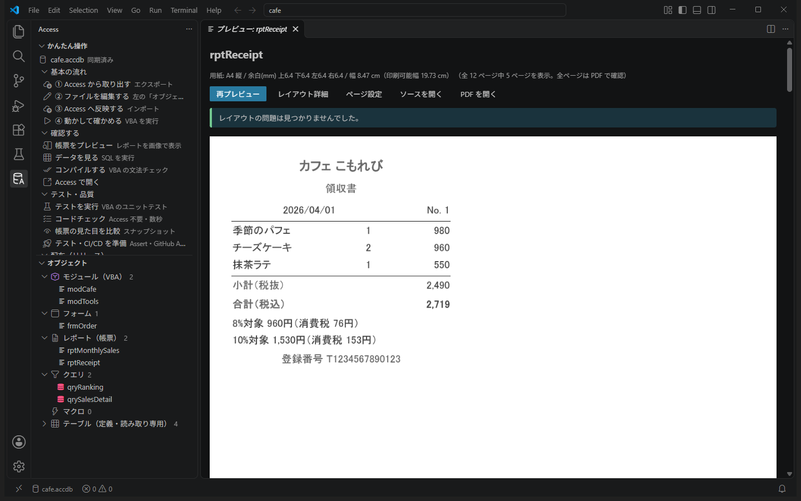
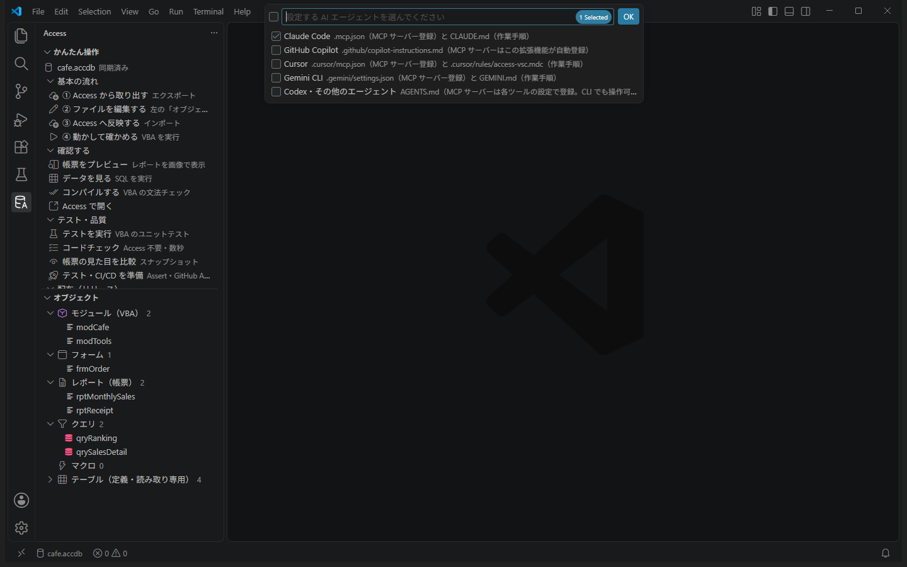

TUTORIAL ・ 中級編
中級編：店長からの改修依頼
カフェ「こもれび」の店長から、3 件の依頼が届きました。フォームのコード（イベント）と、帳票のレイアウト（項目の追加・位置・セクションの高さ）を直す、実際の改修案件に近い流れを体験します。
店長からの依頼
- 「テイクアウトにチェックしても、税込金額が 10% のまま。持ち帰りは 8% のはず！」
- 「インボイス制度に対応したレシートにしてほしい。税率ごとの金額と消費税、登録番号を印字して」
- 「月次売上表のいちばん下に、全体の合計がほしい」
0. 準備と最初の記録 10 分
ゴール：新しいサンプルを用意し、改修前の状態を git に記録する。
- 練習用サンプルを作るAccess アイコン →「その他」→「練習用サンプルを作る」。初級編で作ったものがあれば「新しく作る」を選びます（
AccessVSC-練習2などができます）。「開く」で新しいウィンドウに切り替えます。 - 「① Access から取り出す」
- 改修前の状態を記録する左の［ソース管理］（枝分かれのアイコン）→［リポジトリを初期化する］。上の入力欄に「改修前」と書いて［コミット］（「変更をステージしますか？」と聞かれたら［はい］）。
これで、後から「どこを変えたか」を比べたり、元に戻したりできます。
［ソース管理］の変更の一覧が空になった（すべて記録された）。
うまくいかないとき
- 「git が見つかりません」 → Git for Windows をインストールして VS Code を再起動
- コミットで名前とメールアドレスを聞かれた → ターミナルで
git config --global user.name "山田 太郎"とgit config --global user.email "you@example.com"を実行
案件 1. テイクアウトの税率が 10% のまま 15 分
ゴール：フォームのコードの不具合を見つけて直し、Access の画面で確かめる。
まず再現する
- 「確認する」→「Access で開く」→
frmOrderを開く商品「カフェラテ」、数量2、テイクアウトにチェック →「計算」。税込金額が 1,100（10%）です。正しくは 1,000 × 1.08 = 1,080。 - Access を閉じる開いたままだと反映できません。
原因を探す
frmOrderのファイルを開き、Ctrl+F でCodeBehindFormを探すそこから下が画面の VBA です。「計算」ボタンを押すとcmdCalc_Click→UpdateTotalsが動きます。UpdateTotalsの最後の行を見るMe.txtTotal = TaxIncluded(Me.txtSubtotal, False)TaxIncludedの 2 つ目の引数は「テイクアウトかどうか」です（modCafeの関数の上にマウスを乗せると説明が出ます）。ここがFalse（店内）で固定されていました。

直して確かめる
- チェックボックスの値を渡すように直して保存
画面を開いた直後のチェックボックスは「未設定（Null）」なので、Me.txtTotal = TaxIncluded(Me.txtSubtotal, Nz(Me.chkTakeout, False))Nzで False に置き換えています。 - 「③ Access へ反映する」フォームも、VBA と同じように反映できます。
- 「Access で開く」で同じ操作をする今度は 1,080 になります。チェックを外して「計算」すると 1,100 に戻ります。確かめたら Access を閉じます。
テイクアウトで 1,080、店内で 1,100 になった。Access を閉じた。
案件 1+. 入力したら自動で計算し直す 15 分
ゴール：フォームのイベント（更新後処理）をテキストのまま追加する。
店長に確認してもらうと、「毎回『計算』を押すのが面倒。数量やテイクアウトを変えたら、すぐ金額が変わってほしい」とのこと。商品・数量・テイクアウトの更新後処理（AfterUpdate）で計算し直すようにします。
Access のデザイン画面では、プロパティシートの［イベント］タブで［イベント プロシージャ］を選びますね。テキストでは、コントロールのかたまりに 1 行足すのと、VBA を書くのと、2 か所を直します。
- コントロールに「イベントを使う」印を付ける
frmOrderのファイルで Ctrl+F →Name ="cboProduct"を探し、その次の行に 1 行足します（字下げは上の行にそろえる）。
同じようにName ="cboProduct" AfterUpdate ="[Event Procedure]"Name ="txtQty"とName ="chkTakeout"の次の行にも足します。 - ファイルのいちばん最後に、3 つのイベントの VBA を書いて保存
名前は「コントロール名_イベント名」の決まりです。Private Sub cboProduct_AfterUpdate() UpdateTotals End Sub Private Sub txtQty_AfterUpdate() UpdateTotals End Sub Private Sub chkTakeout_AfterUpdate() UpdateTotals End Sub - 反映して「Access で開く」商品を選ぶとすぐ金額が出て、数量を変えて Tab を押すと計算し直され、テイクアウトのチェックで税込金額が切り替わります。確かめたら Access を閉じます。
- 何を変えたか見る［ソース管理］で
frmOrder.txtをクリックすると、改修前と今が左右に並び、足した行が緑で表示されます。「計算の不具合修正と自動再計算」と書いて［コミット］。

「計算」を押さなくても、商品・数量・テイクアウトを変えると金額が変わる。
うまくいかないとき
- 反映でエラー「…行目の構文が正しくありません」 → 足した行の
"や[ ]の抜け、全角の文字が混ざっていないかを確認 - 反映できたのに自動で計算されない → 1 の行（
AfterUpdate ="[Event Procedure]"）が足りないコントロールがないか確認。VBA だけ書いても、この印がないとイベントは動きません
案件 2. レシートをインボイス対応に 25 分
ゴール：帳票に項目を追加し、レイアウトの問題（セクションの高さ）を直して、プレビューで確かめる。
インボイス（適格請求書）では、税率ごとの合計金額と消費税額、登録番号の記載が必要です。消費税は、税率ごとに合計してから 1 回だけ端数を処理します。今のレシートは、合計（税込）しか出ていません。
① 内訳の文字を作る関数
modCafeの最後に関数を足して保存
帳票の式を長く書くより、VBA の関数にしておくほうが読みやすく、テストもしやすくなります（上級編でテストします）。' レシートの税率ごとの内訳（インボイス用）。例: 8%対象 960円（消費税 76円） Public Function TaxLine(ByVal orderId As Long, ByVal takeout As Boolean) As String Dim amount As Currency amount = Nz(DSum("Amount", "qrySalesDetail", "OrderID=" & orderId & " AND Takeout=" & takeout), 0) TaxLine = Format(TaxRate(takeout), "0%") & "対象 " & Format(amount, "#,##0") & "円（消費税 " & Format(Int(amount * TaxRate(takeout)), "#,##0") & "円）" End Function- 反映して、
TaxLineを1, trueで実行"8%対象 960円（消費税 76円）"。1, falseなら "10%対象 1,530円（消費税 153円）"。注文 No.1 は、店内のパフェ・抹茶ラテと、お持ち帰りのチーズケーキの注文です。
② 帳票に項目を足す
帳票の項目を増やすときは、似た項目のかたまりを丸ごと複製して、名前・中身・位置を書き換えるのが確実です。
- 今のレシートを見る
rptReceiptのプレビュー。1 ページ目が注文 No.1 です。 rptReceiptのファイルでName ="txtSubtotal"を探す小計（税抜）の金額の項目です。すぐ上のBegin TextBoxから、対応するEnd（LayoutCachedHeightの次の行）までが、1 つの項目のかたまりです。- かたまりを丸ごとコピーして、その
Endのすぐ下に貼り付ける貼り付けたほうを、次のように書き換えます。行 変更前 変更後 意味 GUID の 3 行 GUID = Begin〜End（3 行とも削除） 項目の ID。複製元と同じにしないため Name "txtSubtotal""txtTax8"項目の名前 ControlSource "=Sum([Amount])""=TaxLine([OrderID],True)"表示する中身 Left 2600100左端から Width 21004600幅（レシートの幅いっぱい） Top 100900セクションの上端から TextAlign 31右寄せ → 左寄せ LayoutCachedで始まる行は Access が計算し直すので、そのままで大丈夫です。 - 10% の行も作る今作った
txtTax8のかたまりをもう一度その下に複製し、Name ="txtTax10"、ControlSource ="=TaxLine([OrderID],False)"、Top =1250に変えます。 - 登録番号を足す
Name ="lblTitle"（「領収書」の見出し。Begin Labelのかたまり）を丸ごとコピーし、txtTax10のかたまりの下に貼り付けます。GUID の 3 行を消し、Name ="lblRegNo"、Caption ="登録番号 T1234567890123"、Top =1650に変えて保存。
③ レイアウトの問題を直す
- 保存すると、問題パネルに警告が 3 つ出る「txtTax8 の下端 2.17cm がセクションの高さ 1.68cm を超えています」など。足した項目が、合計の入っているセクション（グループフッター）の高さからはみ出しています。
（このまま反映すると Access がセクションを広げてくれますが、意図しない見た目になりやすいので、自分で決めます。） - セクションの高さを広げるCtrl+F で
ForceNewPage =2を探します（グループフッターの設定）。すぐ下のHeight =950をHeight =2100に変えて保存。警告が消えます。 - 反映してプレビュー合計の下に、税率ごとの内訳と登録番号が並びます。


No.1 のレシートに「8%対象 960円（消費税 76円）」「10%対象 1,530円（消費税 153円）」「登録番号 T1234567890123」が出て、合計（税込）は 2,719。レイアウトの問題の表示がない。
（やってみよう）軽減税率の品目に ※ を付けるインボイスでは、軽減税率の品目がわかるようにします。
Name ="txtProductName" の ControlSource ="ProductName" を次に変えると、テイクアウトの品目の前に ※ が付きます。
ControlSource ="=IIf([Takeout],\"※\",\"\") & [ProductName]"" を \" と書きます。うまくいかないとき
- プレビューに「#エラー」 →
ControlSourceの式の綴り（TaxLine・[OrderID]）と、modCafeを反映したかを確認 - 「重なっています」と出る →
Topの値を確認（txtTax8 は 900、txtTax10 は 1250、lblRegNo は 1650） - 反映でエラーになる → 貼り付けた場所が、別のかたまりの途中になっていないか（
Endの次の行に貼る）
ここまでできたら「レシートのインボイス対応」で［コミット］しておきましょう。
案件 3. AI に頼む 15 分
ゴール：AI に改修を頼み、AI が反映・プレビュー・確認まで自分で行う様子を見て、結果をレビューする。
- 「AI と使う」→「AI エージェント連携を設定」使っている AI（Claude Code・GitHub Copilot・Cursor・Gemini CLI など）を選んで OK。AI への作業手順書（
CLAUDE.mdなど）と、ツールの登録ファイルが作られます。 - AI を開き直す「access」というツールの使用を許可するか聞かれたら［許可］。
- チャットで頼む
頼み方の例rptMonthlySales のいちばん下に、全体の合計（数量と売上）を追加して。今の小計の行と同じ見た目にして、プレビューで重なりやはみ出しがないことを確認して。AI は、帳票のファイルを編集 → 反映 → プレビューの画像を見て確認 → 問題があれば直す、を自分で繰り返し、結果を報告します。
- AI の報告を確かめる作業手順書には「完了の条件」（反映が成功・プレビューで問題なし など）が書いてあるので、報告に実行した確認とその結果が書かれているはずです。
- レビューする［ソース管理］で変更を見て、自分でもプレビュー。全体の合計が 31 個・18,800 円（デザート 6,800 + ドリンク 8,000 + フード 4,000）になっていれば正解です。よければ［コミット］、だめなら［変更を破棄］で元に戻せます。

月次売上の最後に、全体の合計（31・18,800）が出た。AI の変更をレビューしてコミットした。
AI に頼むときのコツ「何を」「どうしたいか」に加えて、「どう確かめるか」（プレビューで確認する、テストを通す、など）まで書くと、AI が自分で確かめてくれます。頼む前にコミットしておくと、気に入らなければすぐ戻せます。
5. ふり返り 5 分
| 案件 | 直したところ | 学んだこと |
|---|---|---|
| 税率の不具合 | フォームの VBA（CodeBehindForm 以降） | フォームのコードもテキストで直せる。Access で開いたら閉じてから反映 |
| 自動で再計算 | コントロールのかたまりに AfterUpdate の行 + VBA | イベントは「印」と「プロシージャ」の 2 つがそろって動く |
| インボイス対応 | VBA の関数 + 帳票の項目の複製 + セクションの高さ | 似た項目を複製して書き換える。はみ出しはコードチェックとプレビューが教えてくれる |
| 月次売上の合計 | AI に依頼 | 確かめ方まで伝える。頼む前にコミットし、変更をレビューする |
手で確かめた「テイクアウトなら 1,080」「No.1 の合計は 2,719」は、毎回 Access で開いて確かめるのは大変です。上級編では、これを自動テストにします。